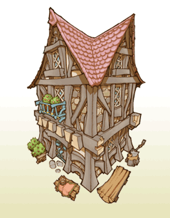
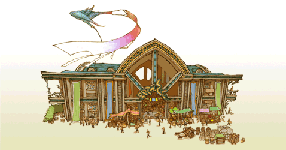

23
|
Gebäudearten |
 |
Hier folgt eine Liste einiger der Gebäude, die im Königreich errichtet werden können.
● Häuser  Kleines Haus: ein Haus für zwei. Erfordert minimalen Elementomaufwand. Gut für die Staatskasse zu Beginn. Ruft einen aufstrebenden Abenteurer auf den Plan. Weiträumiges Haus: benötigt eine größere Menge an Elementomen, doch die zurückgerufene größere Familie macht dies durch die höheren Abgaben bald wieder wett. Ruft ebenfalls einen aufstrebenden Abenteurer auf den Plan. |
● Läden
Bäckerei: hauptsächliche Lebensmittelquelle der Bewohner. Bürger, die hier einkaufen, kehren glücklich wieder heim. Emporium: das Handelszentrum des Reichs, hier können Bewohner exotische Güter erstehen. Importierte fremdländische Gegenstände inspirieren auch die anderen Geschäfte im Reich.  |
● Abenteurerläden
Waffenladen: bietet verschiedene auf die Bedürfnisse von Abenteurern zugeschnittene Waffen an. Spenden für die Waffenforschung treiben die Angriffskraft der Abenteurer in die Höhe.  Rüstungsladen: bietet verschiedene auf die Bedürfnisse von Abenteurern zugeschnittene Rüstung an. Spenden für die Rüstungsforschung treiben die Widerstandskraft der Abenteurer in die Höhe.
Rüstungsladen: bietet verschiedene auf die Bedürfnisse von Abenteurern zugeschnittene Rüstung an. Spenden für die Rüstungsforschung treiben die Widerstandskraft der Abenteurer in die Höhe.Gegenstandsladen: bietet verschiedene auf die Bedürfnisse von Abenteurern zugeschnittene Gegenstände an. Tränke und Antidote sind für Truppen ohne Heiler unverzichtbar. |
● Abenteurergebäude
Weißmagiertempel: ermöglicht die Ausbildung von Weißmagiern und das Erlernen von weißer Magie. Spenden für diese Einrichtung werden zu mächtigeren Zaubern führen. Schwarzmagierakademie : ermöglicht die Ausbildung von Schwarzmagiern und das Erlernen schwarzer Magie. Spenden für diese Einrichtung werden zu mächtigeren Zaubern führen. Trainingshalle: ermöglicht die Ausbildung zum Krieger und mehr EXP durch Training. Spielhalle: ermöglicht die Ausbildung zum Dieb und das Erlernen von Diebesfertigkeiten. Andere Abenteurer besuchen diese Einrichtung ebenfalls, um sich zu entspannen und ein paar Gil extra zu gewinnen. |
● Besondere Gebäude
 Gildenhalle: das zentrale Organisationsgebäude für alle Abenteurerangelegenheiten. Hier kann sowohl die Anzahl an aussendbaren Abenteurern als auch ihre Vergütung erhöht werden. Taverne: ermöglicht Abenteurern die Zusammenstellung von Trupps, um einen Einsatzort zu absolvieren. Hier können auch manuell Gruppen zusammengestellt werden. Gasthaus: ermöglicht reisenden Abenteurern und Händlern den Besuch des Reiches. |
● Parks
 Brunnenpark: Die Grünanlagen erfreuen die Herzen der Bürger und Abenteurer gleichermaßen.
Brunnenpark: Die Grünanlagen erfreuen die Herzen der Bürger und Abenteurer gleichermaßen. Anschlagpark: fügt dem Reich ein weiteres Anschlagbrett hinzu, wodurch mehr als ein Geheiß gleichzeitig veröffentlicht werden kann. |
 |
 |
 |